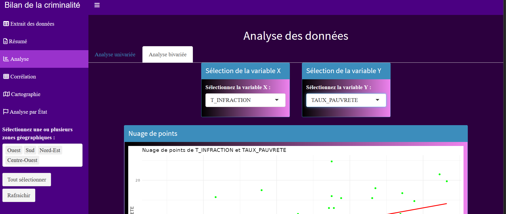
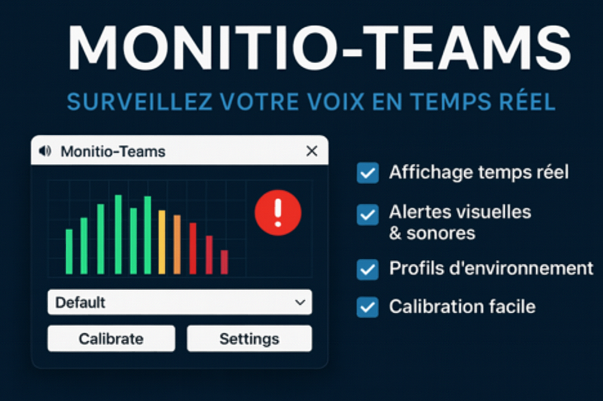

Business Intelligence
Business Intelligence
Dashboard Décisionnel EPSM
Tableau de bord automatisé pour le pilotage des activités hospitalières — 95% de temps gagné sur le reporting.
Voir le détail8 projets · BI, Data Science, IA, Automatisation, Mobile & Web
Business Intelligence
Tableau de bord automatisé pour le pilotage des activités hospitalières — 95% de temps gagné sur le reporting.
Voir le détail
Data ScienceApplication R Shiny pour l'analyse de données de criminalité aux USA avec visualisations interactives et modélisation statistique.
Voir le détail IA & Automatisation
IA & Automatisation
Solution de traitement automatisé d'alertes MSP — pipeline de data mining déployé en production chez Safran.
Voir le détail
IA & AutomatisationUtilitaire Windows de surveillance audio en temps réel avec intégration Microsoft Teams — confort acoustique en réunion.
Voir le détailResume Intelligence Engine — audit forensique de CV, réécriture IA (Groq Llama-3.3-70b), scraping WTTJ/HelloWork en temps réel et génération PDF 15 thèmes. Stack Next.js 15 + Python + Docker.
Application iOS de lecture audio premium avec traitement DSP (EQ, Reverb 3D, Compresseur, Limiter) et streaming YouTube intégré. Interface luxe thème sombre/doré.
Voir le codeJeu Snake mobile où manger la nourriture change de piste musicale. Intégration Genius API pour les paroles et NowPlaying. Concept original mêlant gaming et musique.
Voir le codeApplication web de retouche photo avec filtres avancés (flou, pixelisation, esquisse), retouche automatique des visages via OpenCV, et génération de rapports PDF.